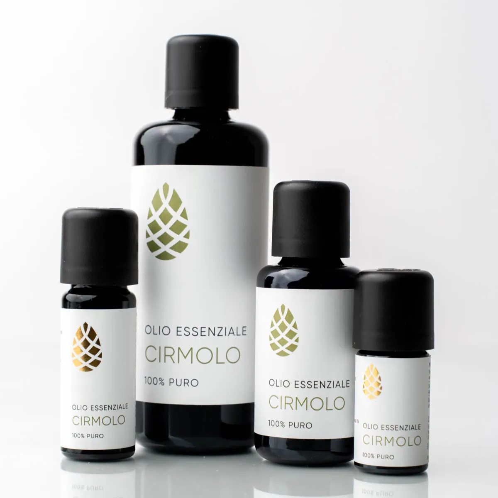
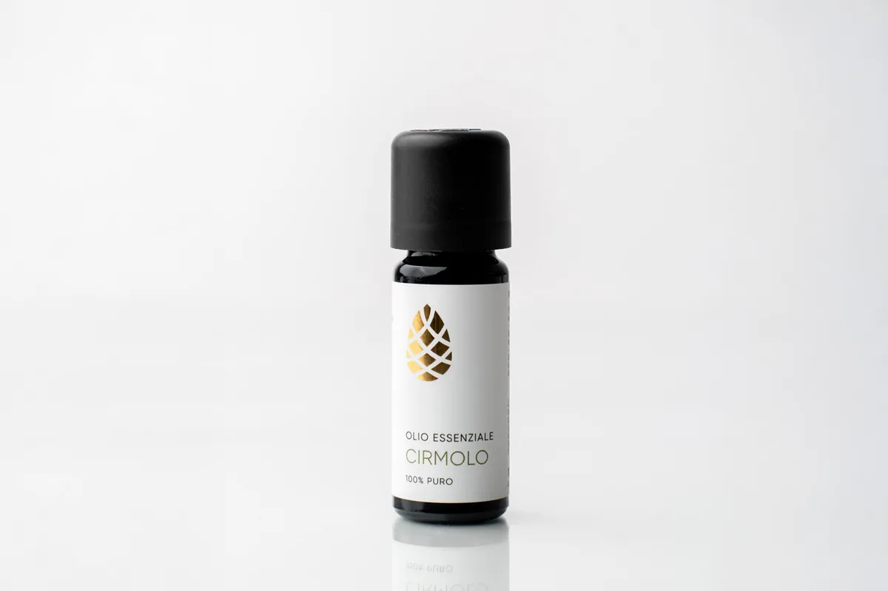
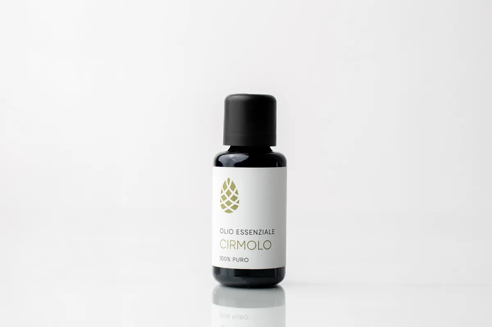
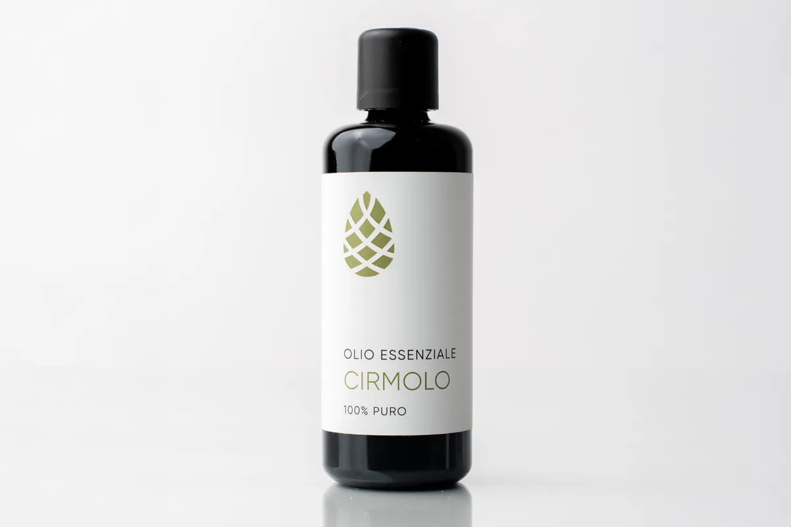

Olio essenziale di Cirmolo
100% puro, da Pinus cembra della Val di Fiemme, distillato in corrente di vapore
10,00 – 80,00 €Formato
- 10 ml
- 30 ml
- 100 ml
- Spedizione gratuita in Italia sopra 60 €
- 14 giorni per il recesso
- PayPal in 3 rate senza interessi
Spedizione gratuita in Italia sopra 60 € · altrimenti 7 €.
«Solo parole positive per questa azienda: seria, affidabile e con prodotti di altissima qualità 100% made in Italy.»
Anna F. · dalle testimonianze sul sito Cirmy
Com’è fatto
L’olio essenziale puro di cirmolo, distillato in corrente di vapore in Val di Fiemme. Si usa nel diffusore, sulla pelle o anche in cucina: una goccia ogni 100 g o 100 ml.
Dati tecnici
| Nome botanico | Pinus cembra L. (Pinaceae) |
|---|---|
| Origine | Val di Fiemme, Trentino |
| Estrazione | distillazione in corrente di vapore |
| Formati | 10 ml · 30 ml · 100 ml |
| Uso | diffusione, uso topico, uso alimentare (1 goccia ogni 100 g o 100 ml) |
| Conservazione | ben chiuso, lontano da luce e calore, meglio in frigo; non usarlo dopo la scadenza o oltre due anni dall’imbottigliamento |